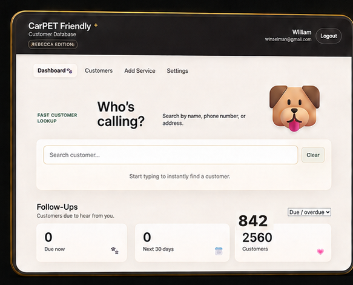

01
Customer intelligence
Quick customer lookup, service history, repeat-customer context and the information needed before picking up the phone.
Real business · custom software
A custom operations system built around the way a real service business actually works — customer lookup, scheduling, reminders, invoices, reporting and day-to-day business visibility in one clean tool.

The problem
The goal was not to build a giant enterprise dashboard. It was to make the common actions fast, keep the important information visible and reduce the little bits of friction that pile up during a workday.
Quick customer lookup, service history, repeat-customer context and the information needed before picking up the phone.
Keep upcoming work visible and make reminders part of the workflow instead of another separate system to remember.
Track jobs, revenue and year-based records without burying the owner in accounting-software complexity.
Useful business signals — weekly jobs, revenue, customer value and activity — presented in a way that can be understood at a glance.
How it works
The interface is built around the actual sequence of work, so the software can stay simple even as the system behind it becomes more capable.
Your workflow can be the product spec
I build practical software around the way your team already works — then improve it from there.